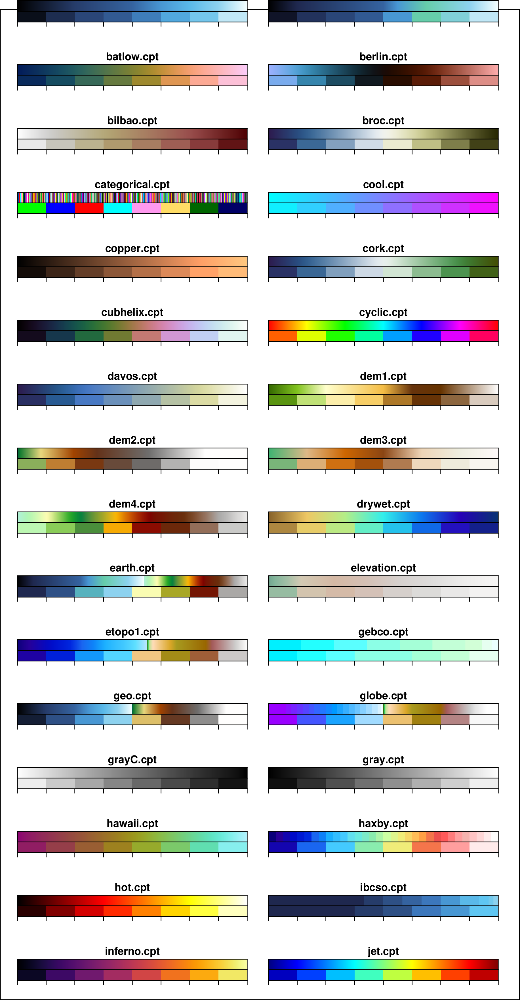
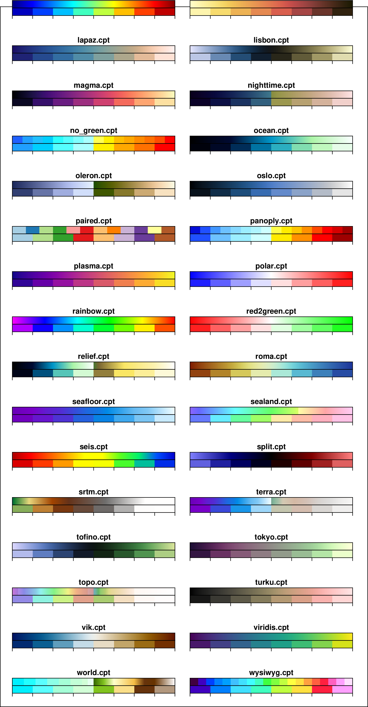

7.5 GMT内置CPT¶
GMT内置了43个常规CPT文件和一个分类CPT文件，位于 $GMTHOME/share/cpt 目录中。
下图给出了GMT内置的44个CPT文件，每张图上边的色标为原始CPT，用如下命令绘制:
gmt colorbar -D5c/2c+w10c/1c+h+jTC -B0 -C<cpt> -pdf CPT
下边的色标是经过 makecpt 离散成8部分后的色标，用如下命令绘制:
gmt makecpt -C<cpt> -T-1/1/0.25 > new.cpt
gmt colorbar -D5c/2c+w10c/1c+h+jTC -Bf0.25 -Cnew.cpt -pdf CPT

